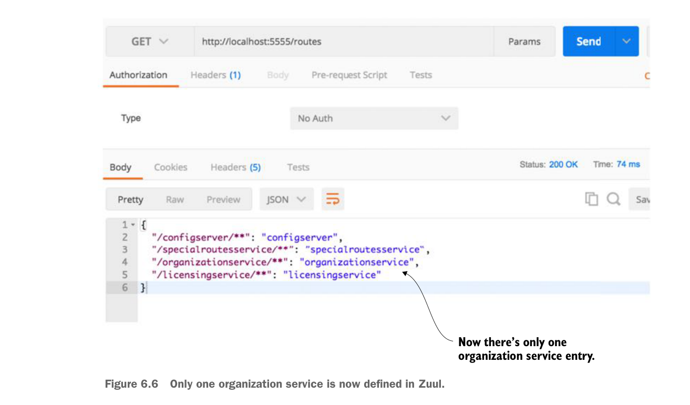

The following code snippet shows how the ignored-services attribute can be used to exclude the Eureka service ID organizationservice from the automated mappings done by Zuul:
zuul:
ignored-services: 'organizationservice'
routes:
organizationservice: /organization/**The ignored-services attribute allows you to define a comma-separated list of Eureka service-IDs that you want to exclude from registration. Now, when your call the /routes endpoint on Zuul, you should only see the organization service mapping you’ve defined. Figure 6.6 shows the outcome of this mapping.

Only one organization service is now defined in Zuul.
If you want to exclude all Eureka-based routes, you can set the ignored-services attribute to “*”.
A common pattern with a service gateway is to differentiate API routes vs. content routes by prefixing all your service calls with a type of label such as /api. Zuul supports